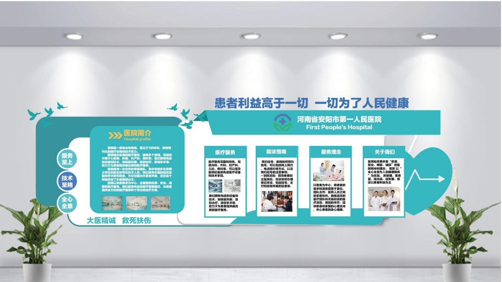
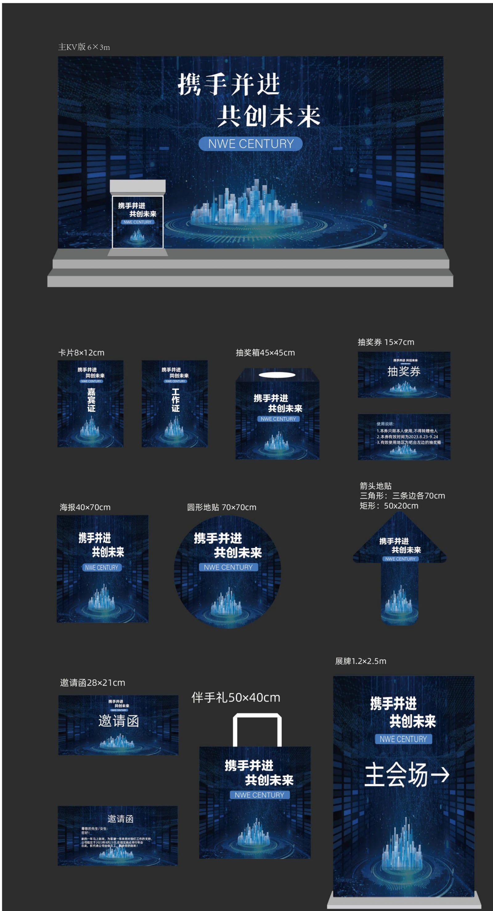
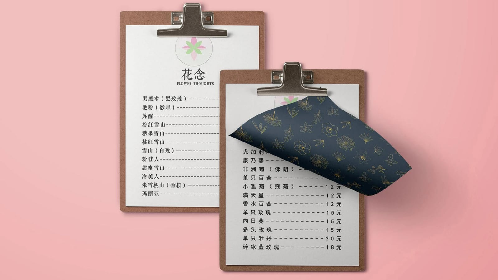
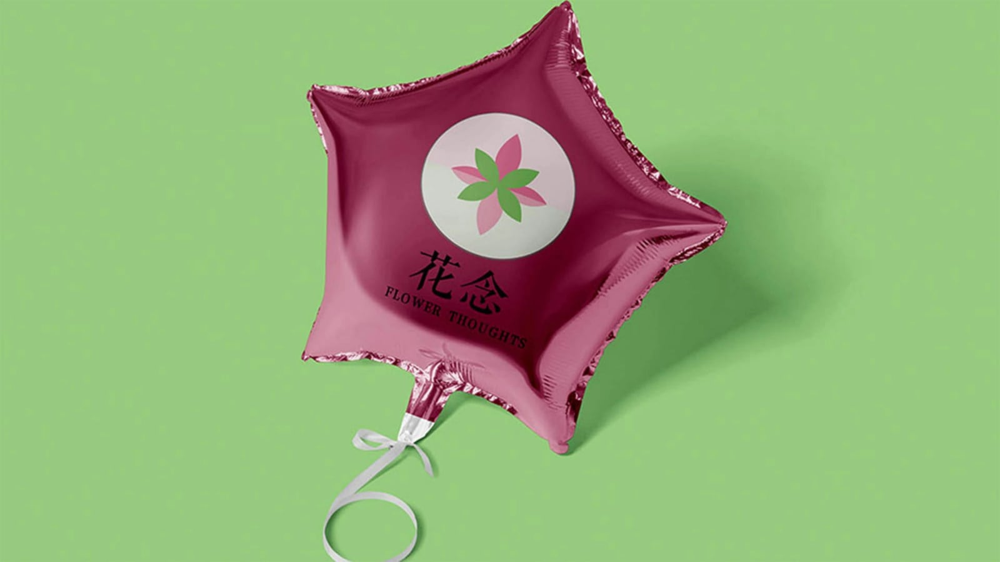
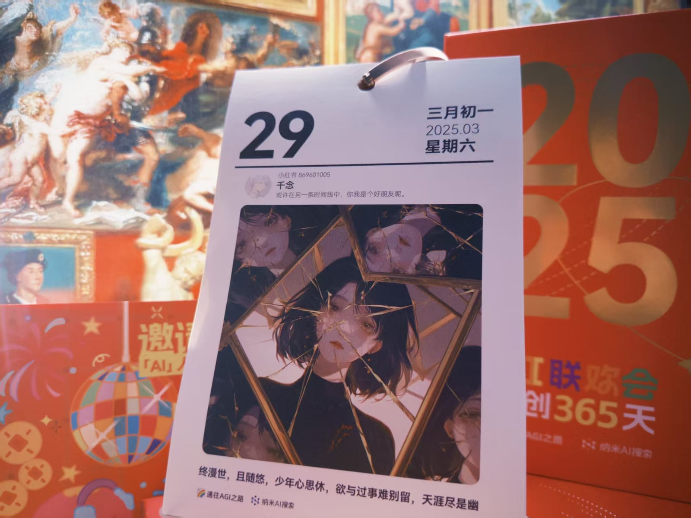
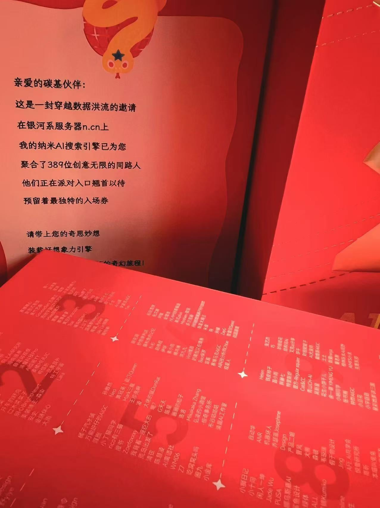

视觉设计师
就职于山东先森科技有限公司，参与视觉设计与品牌内容制作，在真实项目中完成从需求理解到成果交付的实践。
01 / 10
VISUAL DESIGN · INTERACTIVE STORY · AI VIDEO
CHAPTER ONE / GRAPHIC DESIGN
从品牌主视觉到文化空间，我关注信息结构、视觉秩序，以及设计在真实场景中的沟通效率。

01 / CULTURAL WALL
以清晰的信息层级承载医院简介、服务理念与就诊指引，将专业内容转化为易读、亲和的空间视觉。

02 / EVENT KEY VISUAL
围绕“携手并进，共创未来”建立蓝色科技视觉语言，并延展至邀请函、指示牌和会场物料。

03 / BRAND STATIONERY
从花卉图形出发，建立轻盈、柔和的品牌识别，并应用于菜单、名片与日常文具。

04 / BRAND OBJECT
把品牌语言从二维画面带到真实物件，让识别系统成为可以被触碰、被记住的一部分。
CHAPTER TWO / INTERACTIVE WORKS
点击名称后才会在新页面打开对应的 B站 TOY。
CHAPTER THREE / AI COMIC DRAMA
从画面生成、镜头节奏到声音表达，探索 AI 参与叙事创作的可能。
CHAPTER FOUR / ABOUT ME
就职于山东先森科技有限公司，参与视觉设计与品牌内容制作，在真实项目中完成从需求理解到成果交付的实践。
因家庭原因回到家乡，开始系统学习 AI 图像、内容生成与动态影像，并尝试将传统设计方法与 AIGC 工具结合。
创作成果获得收录并收到活动奖品。这段经历让我更确定：工具不断变化，审美判断、叙事能力与持续行动仍是创作者的底层能力。

